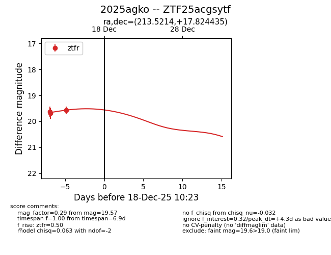
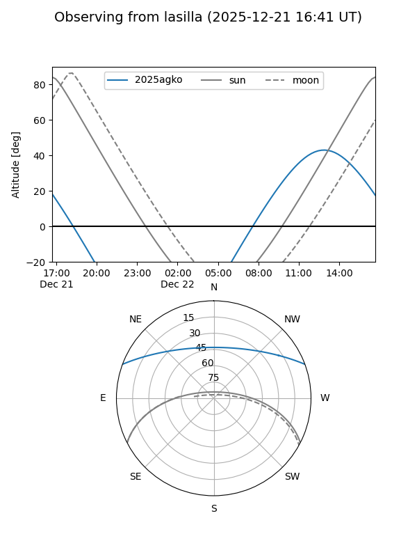
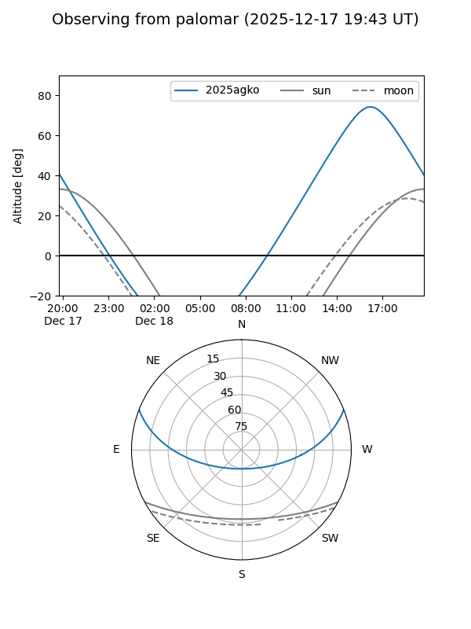

2025agko
Target 2025agko at 2025-12-18 11:18
Aliases and brokers:
FINK: fink-portal.org/ZTF25acgsytf
Lasair: lasair-ztf.lsst.ac.uk/objects/ZTF25acgsytf
ALeRCE: alerce.online/object/ZTF25acgsytf
TNS: wis-tns.org/object/2025agko
YSE: ziggy.ucolick.org/yse/transient_detail/2025agko
alt names
ZTF25acgsytf (ztf,fink_ztf)
2025agko (tns,yse)
Coordinates:
equatorial (ra, dec) = 213.5214,+17.82444
equatorial (HMS+DMS) = 14:14:05.15,+17:49:27.97
galactic (l, b) = (11.2215,+68.80374)
Photometry
last ztfr=19.57
3 ztfr detections
Lightcurve

Visibility


Additional plots